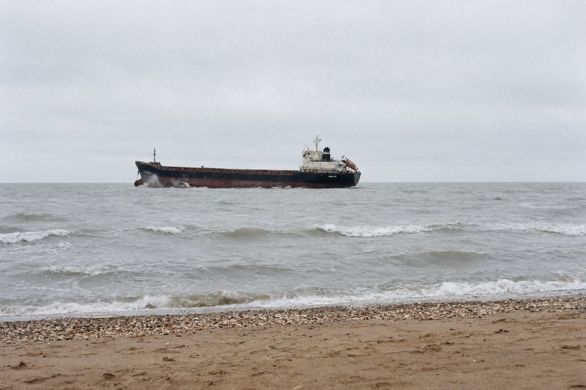

Шановні колеги,
справа проста. Тому й не подобається.
У ніч з четверга на п'ятницю, 20.11.98, о 01:52 суховантаж «Ліман Стар» (прапор Белізу, зареєстрований власник — Liman Star Shipping Ltd, менеджер і страхувальник — одеське ТОВ «Акватрейд-Сервіс», директор С. П. Гордієнко) ішов у баласті з Варни на Миколаїв і сів на Вовчу банку, під самим маяком Вовча коса. Сидить і досі, з креном на правий борт; знімок — у вкладці. Капітан Гаврилюк у морському протесті пише, що маяк «не відповідав характеристиці» і судно через це збилося з орієнтирів, а на додачу відвертали від якогось човна без вогнів. Екіпаж уночі висадили шлюпкою; у прибої шлюпку перекинуло, і другий помічник Дмитро Савчук зник. Тіло знайшли на березі в суботу.
Страхова компанія «Чорноморська гарантія» доручила нам перевірити претензію «Акватрейд-Сервіс» на 900 000 доларів — «повна загибель». Від страховика з нами працює Віталій Олегович Пасічник: він цей поліс і вів. Претензія, протест, суднова роль і решта паперів, які прислав страхувальник, — у справі. Там же витяг з карти і зі «Списку вогнів» — щоб ви знали, що мало світити з Вовчої коси.
Хтось із них бреше. З'ясуйте, хто і в чому, — і чи платити. Зверніть увагу на порядок: спершу в чому, потім хто. Капітан каже — маяк світив не так. Маячник, кажуть, божиться, що все горіло бездоганно. Обидва говорять про ту саму ніч, а ніч, наскільки мені відомо, була одна.
Ми не міліція — розмовляємо, а не допитуємо; оглядаємо, а не обшукуємо; пишемо факси; маємо архів, Лілію Борисівну для англійської і штурманський стіл для прокладки. Хто не хоче з нами говорити — має право. Хто хоче, але бреше, — теж має право; ми маємо право це помітити.
| Що робимо | Що вказувати |
|---|---|
| Розмова | З ким говоримо; за потреби — про що питаємо і що показуємо. Пояснення записуємо на бланку бюро. |
| Факс-запит в установу | Куди пишемо і що просимо надіслати. Зоя відправить і принесе відповідь. |
| Огляд на місці | Що оглядаємо (за згодою власника) і на що звернути увагу. |
| Архів бюро і бібліотека | Що шукаємо: видання, реєстр, тему, ім'я, дату. |
| Переклад | Який документ. Лілія Борисівна перекладає дослівно і нічого не тлумачить. |
| Прокладка на карті | Звідки беремо позиції і що наносимо. |
Почнімо з вогню. Поки ми не знаємо, що саме світило з Вовчої коси тієї ночі і коли, усе інше — розмови на кухні. Папір, шановні, витримає все. Чорнило ж, як правило, видає того, хто писав його поспіхом.
Вкладка: фото т/х «Ліман Стар» на Вовчій банці, 21.11.98, ранок (передав страховик).
P.S. Кіт Бакен з вами в Очаків не поїде. Не просіть.
